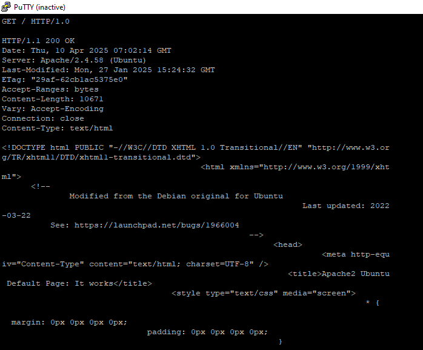
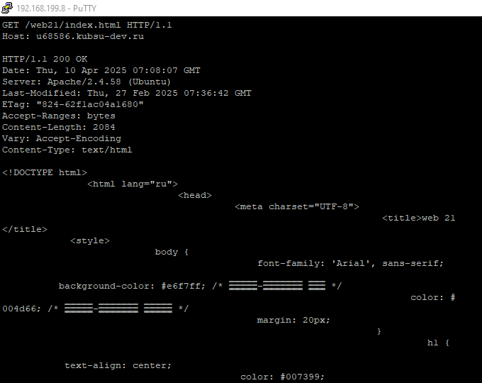
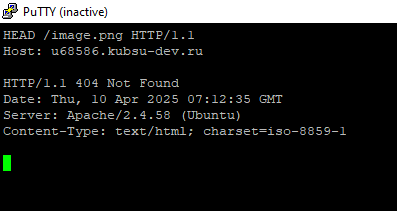

Получить главную страницу методом GET в протоколе HTTP 1.0
Получить внутреннюю страницу методом GET в протоколе HTTP 1.1
Определить размер файла file.tar.gz, не скачивая его
Определить медиатип ресурса /image.png
Отправить комментарий на сервер по адресу /index.php
Получить первые 100 байт файла /file.tar.gz
Определить кодировку ресурса /index.php